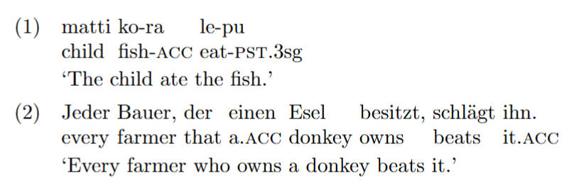

LIN 301 — Homework 1: LaTeX
Due: September 8, 2025
Submit: PDF export and your .tex source file
Goal: Make sure you can compile a clean LaTeX document and use three discipline‑specific tools: IPA, interlinear glosses (Leipzig), and basic syntax trees.
Learning objectives
- Build and compile a minimal LaTeX project
- Typeset IPA with
tipa - Create interlinear glossed examples following the Leipzig rules with
gb4e - Draw phrase‑structure trees with
qtree
What you’ll turn in
hw01_yourlastname.pdfhw01_yourlastname.tex
You must use Overleaf for this assignment.
Starter file (copy/paste into hw01_yourlastname.tex)
\documentclass[12pt]{article}
\usepackage[margin=1in]{geometry}
\usepackage[T1]{fontenc}
\usepackage[utf8]{inputenc}
\usepackage[english]{babel}
\usepackage{setspace}
\usepackage{parskip} % space between paragraphs
\usepackage{tipa} % IPA
\usepackage{gb4e} % Leipzig-style examples (loads cgloss4e)
\noautomath % avoid math-mode surprises inside gb4e
\usepackage{forest} % syntax trees
\usepackage{graphicx}
\usepackage{hyperref}
\title{HW01: LaTeX + Linguistics Basics}
\author{<Your Name>}
\date{<Course + Section> \\ <Due date>}
\begin{document}
\maketitle
\onehalfspacing
% Replace each TODO with your work.
\section*{Part A — LaTeX Warm‑up (20 pts)}
\begin{enumerate}
\item (5) Create an unordered list of three things you want to learn in 301.
\item (5) Create a 2×3 table with headers \textit{Term}, \textit{Definition}, \textit{Example}. Fill it with linguistics items of your choice.
\item (5) Insert a figure placeholder (no image needed). Use a caption and a label, and refer to it in the text (e.g., ``see Figure~\ref{fig:placeholder}'').
\item (5) Add a footnote to any sentence.
\end{enumerate}
\section*{Part B — IPA Practice (20 pts)}
Use \verb+\textipa{...}+ from the \texttt{tipa} package. Transcribe the following into broad IPA (American English or your native variety—be consistent). Include a brief note (1–2 lines) about any interesting segment.
\begin{enumerate}
\item (5) \textbf{computational}
\item (5) \textbf{syntax}
\item (5) \textbf{Indo-European}
\item (5) A minimal pair of your choice; give both forms in IPA and say what contrast they illustrate.
\end{enumerate}
\section*{Part C — Leipzig Glosses (30 pts)}
Use the Leipzig Glossing Rules with \texttt{gb4e}. Provide a free translation on a separate line. Use small caps for category labels (e.g., \textsc{pst}, \textsc{nom}). Two items are provided below in a toy language; analyze/segment and gloss them using \texttt{gb4e}.
\noindent Then create \textbf{one} original Leipzig‑style example from any language you know or from a textbook (cite the source if not your own). (10)
\section*{Part D — Syntax Trees (30 pts)}
Use \texttt{forest}. You may assume a simple X$'$-style phrase structure with the following category labels at minimum: S/TP, VP, NP/DP, PP, AP, AdvP, P, D, N, V, A, Adv, C, CP. Draw trees for the three sentences below (10 pts each).
\subsection*{Sentences}
(a) The student quickly read the paper.\\
(b) Those linguists from Kentucky laughed.\\
(c) Andrew thinks that students code.
\subsection*{Example of the style expected}
\forestset{
default preamble={
for tree={
edge=semithick,
align=center,
s sep=6pt, l sep=10pt,
inner sep=2pt
}
}
}
\begin{center}
\begin{forest}
[CP
[C$'$
[NP
[N$'$ [N\\LaTeX] ]
]
[VP
[V$'$
[V\\is]
[AP [A$'$ [A\\fun] ] ]
]
]
]
]
\end{forest}
\end{center}
\end{document}gb4e Examples (1), (2).

Grading rubric (100 pts)
- Part A LaTeX basics (20 pts): list (5), table (5), figure + ref (5), footnote (5)
- Part B IPA (20 pts): three target words (15 total), minimal pair + note (5)
- Part C Leipzig (30 pts): two toy‑language items segmented/glossed correctly (20), one original example + free translation + citation if needed (10)
- Part D Trees (30 pts): three trees with reasonable constituency and labeling (10 each). Credit clarity, consistent labeling, and well‑formedness (e.g., heads with complements, correct attachment of adjuncts/PPs).
Tips & common pitfalls
- If
gb4ecomplains about math mode, ensure\noautomathappears after\usepackage{gb4e}. - For IPA, wrap only the phonetic string in
\textipa{}. Keep punctuation outside. - In glosses, remember: hyphen
-joins morphemes, period.joins feature bundles (e.g.,\textsc{pst}.3sg). Free translation goes in single quotes or quotation marks. - For
qtree, balance your brackets carefully. Each constituent should be of the form[.Label ... ].
Academic integrity
You may discuss general LaTeX setup with classmates, but all linguistic content (IPA, glossing, trees) must be your own work. Cite any source you use for examples.